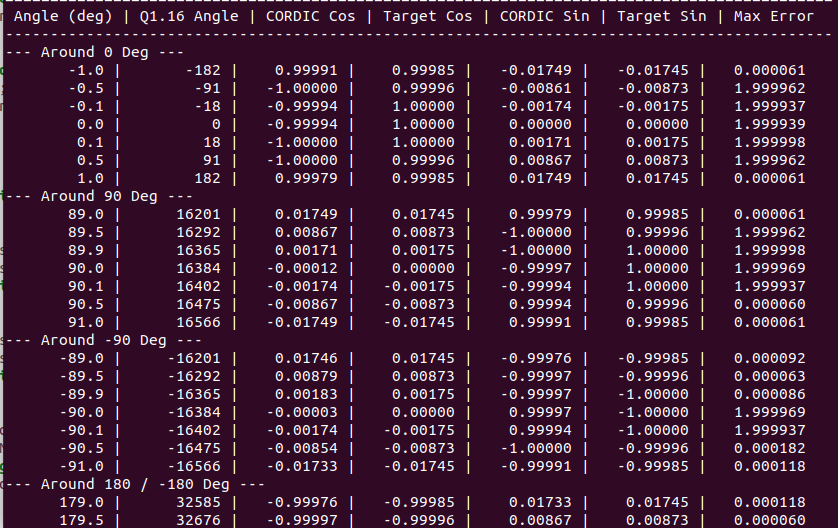
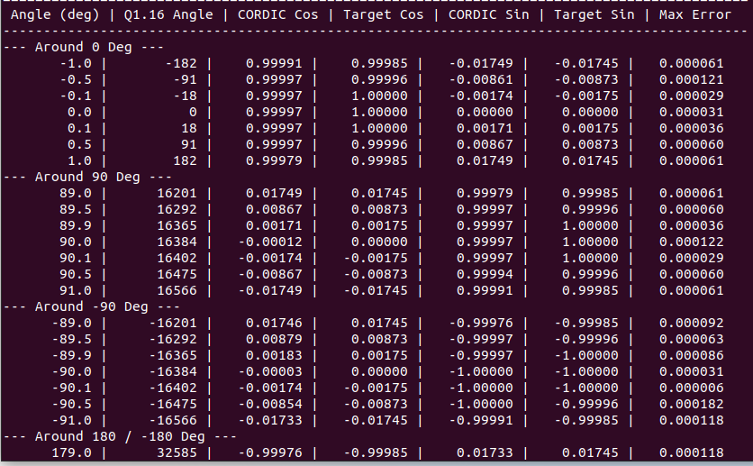

If we want sine and cosine on an FPGA, the easiest way is a lookup table, maybe combined with linear interpolation, etc. That works, but requires a lot of LUTs and DSP slices for the interpolation math. Which is fine if you have an FPGA with a large number of LUTs, but not the best when you work with resource-constrained FPGAs. I was working with the SOAN PAPDI board, which is based on the iCE40 UP5K with 5280 LUTs, and only 8 DSP blocks, and I wanted this thing to eventually run on FPGAs even smaller, like the Shrike Lite with just 1120 LUTs.
There comes CORDIC: it stands for COordinate Rotation DIgital Computer, invented by Jack E. Volder in 1959 to replace analog resolvers in the B-58 bomber's navigation computer, which needed fast sine/cosine and vector rotations with no floating-point hardware in sight. It computes trigonometric, hyperbolic, and mathematical functions.
The greatest benefit of the CORDIC algorithm is the small size of the FPGA needed for its implementation. All that is needed for CORDIC to operate is a small table, along with the shift and add operations. Moreover, no multipliers or dividers are required by the algorithm.
Table 1: CORDIC configurations and mode
| Coordinate System | Rotation Mode | Vectoring Mode |
|---|---|---|
| Circular | Computes sin(θ) and cos(θ) — rotates the vector by a given angle | Computes vector magnitude and atan(y/x) — rotates the vector to the x-axis |
| Linear | Computes multiplication (x·y) | Computes division (x/y) |
| Hyperbolic | Computes sinh(θ) and cosh(θ) | Computes atanh(y/x), and combined with linear mode, sqrt(x) |
I worked only with a circular coordinate system, rotation mode, since all I needed was sine and cosine of a given angle.
Starts by taking an initial vector of a certain length lying along the x-axis and turning it bit by bit until it reaches the desired angle; the x-component of the vector becomes the cosine, and the y-component becomes the sine.
Each rotation step follows this update:
x[i+1] = x[i] - d[i] · y[i] · 2^(-i)
y[i+1] = y[i] + d[i] · x[i] · 2^(-i)
z[i+1] = z[i] - d[i] · atan(2^(-i))In the formula above, d[i] is the sign of the turn (+1 or −1, according to the sign of the residual angle z[i]), while 2^(-i) is the constant that transforms a rotation into a simple shift rather than a multiplication. z is nothing but a counter of "how much angle is left to be rotated" — it decreases from the initial angle down to zero in a series of atan steps.
Those atan(2^-i) values are fixed for a given number of iterations (here I used 15 iterations).
Each of these rotations actually increases the length of the vector to some extent, because it is not a "pure rotation." Eventually, this increase converges to a constant value, which depends only on the number of iterations and not on the angle. The vector length is scaled appropriately at the beginning by the K factor, so that the final length is exactly 1.0 (and the divider is avoided).
For 15 iterations, this K factor works out to about 0.6072. Since I'm not doing floating point anywhere in this design, I converted that into fixed point (Q1.15) upfront and hardcoded it as K_FACTOR = 19898 — that's just 0.6072 × 32768, rounded off. So instead of computing this constant every time, I just start the vector at that length and let the 15 rotations grow it back out to 1.0 by the end.
Circular-rotation mode CORDIC will only converge within a range of roughly ±99.7 degrees, which is the summation of all the angles contained in the look-up table. If the angle is fed outside this range, the vector will never get to its destination. The fix is folding the angle back into range using trig identities.
Accuracy scales with iterations (serial, one stage reused) or stages (parallel, unrolled). Roughly, n bits of output precision need about n iterations. That's why 15 iterations get comfortably within a few LSBs of error on a 16-bit output.
There are two approaches to implement this hardware. One is what I have done: one physical instance of a CORDIC rotation stage — the shifter, adder, and comparators — which is iterated 15 times over 15 clock cycles by a state machine using the lookup table. The second approach is the unrolling of the loop — building 15 physical instances of the rotation stage and connecting them one by one, so that the angle goes through them combinationally.
The iterative approach was used due to area optimization goals. One rotation stage iterated 15 times takes about the number of LUTs of one rotation stage, plus the small state machine and the counter for iterating. Unrolling takes about 15 times more than this, since each rotation stage needs its own shifter, adder, and hardcoded atan constant.
The RP2040 and FPGA exchange data using two consecutive 16-bit SPI transactions for each query: one transmits the angle, and the other retrieves the cosine of the angle, followed by the sine. However, the SPI interface operates in full-duplex mode; hence, it is theoretically possible to send the current angle and receive the result at once. The problem here is that, due to the 15 cycles of latency required by the CORDIC core to compute the result, the result will correspond to the previous angle, not the current one.
The easiest solution in this case is to send the angle, discard the result, and send the very same angle once again:
queryCordic(angle, c_cos, c_sin);
queryCordic(angle, c_cos, c_sin);Internally, I kept x, y, and z as 18-bit signed values, 2 bits wider than the 16-bit input/output. That headroom is needed because of the quadrant pre-rotation step: for angles outside ±90°, the vector starts partway rotated by ±90° before the main loop even begins, and that pre-rotation can briefly push x or y slightly past what fits cleanly in 16 bits.
Initially, what I did was clamp the output directly from 18-bit to 16-bit instead of saturation. This became an issue when dealing with the boundary angles at quadrants (90°, 180°, 270°), where the truncated result would switch signs rather than clip to max. So I resorted to using a saturation function, which takes into account the signed 16-bit range of the 18-bit value.
Here's what it actually looked like. The error blows up to almost 2.0 right around 0°, 90°, and -90° — that's the sign flip, since cos/sin should be near ±1 but the truncated value wraps to the opposite sign instead:

After switching to the sat() function, the same angles come out clean, with error staying in the 0.00006–0.0002 range across all three boundaries:

Here's the actual output from the test firmware, comparing the FPGA's CORDIC result against the actual values.
Angle | CORDIC Cos | Actual Cos | Cos Error | CORDIC Sin | Actual Sin | Sin Error
32.0 | 0.8480 | 0.8480 | 0.00000 | 0.5300 | 0.5299 | 0.00010
90.0 | 0.0000 | -0.0000 | 0.00000 | 1.0000 | 1.0000 | 0.00000
9.0 | 0.9877 | 0.9877 | 0.00001 | 0.1564 | 0.1564 | 0.00003
23.0 | 0.9205 | 0.9205 | 0.00004 | 0.3908 | 0.3907 | 0.00009
89.0 | 0.0175 | 0.0175 | 0.00003 | 0.9998 | 0.9998 | 0.00003
130.0 | -0.6428 | -0.6428 | 0.00005 | 0.7660 | 0.7660 | 0.00009
270.0 | 0.0002 | 0.0000 | 0.00015 | -1.0000 | -1.0000 | 0.00003Worst-case error across all of these is around 0.00015 — well under a tenth of a percent.
This is perfectly in tune with the results that one would expect after 15 iterations on a 16-bit fixed-point output — every iteration cuts down the error by half, so by the end of 15 iterations, one is working within the noise floor of the fixed-point system itself.
| Resource | Used | Available (UP5K) | % Used |
|---|---|---|---|
| LUTs (ICESTORM_LC) | 777 | 5280 | 14% |
| Block RAM | 0 | 30 | 0% |
| DSP blocks | 0 | 8 | 0% |
| I/O pins | 6 | 96 | 6% |
| Global buffers | 6 | 8 | 75% |
| Max frequency | 28.32 MHz | 24 MHz target | PASS |
777 LUTs out of 5280 — just under 15% of the UP5K, with zero DSP blocks.
Full RTL, firmware, and pin constraints are here: soan-papdi-examples/05-cordic